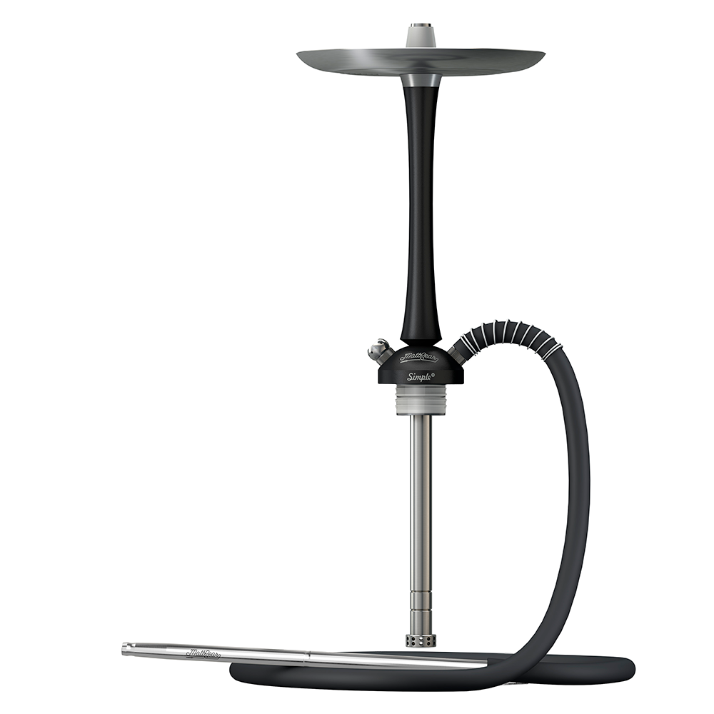

MattPear Simple M

Кальян состоит из основания, в котором находятся отверстие под клапан и коннектор для шланга, через центральное отверстие основания проходит внутренняя часть шахты, которая соединяет погружную трубку и верхнюю часть шахты на которой установлено блюдце, удерживаемое коннектором для чаши. В нижней части погружной трубки находится диффузор. Отличительной особенностью этого кальяна является то, что клапан и коннектор шланга удерживаются в основании на неодимовых магнитах.